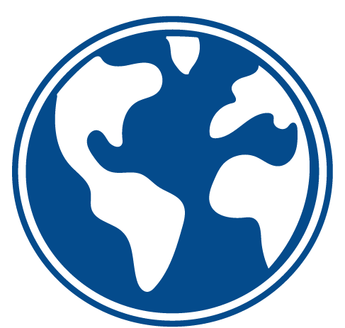

Universidad Externado de Colombia
Casa académica: formula la pregunta, pone estudiantes, sostiene la ética de uso de datos y revisa si el dato aguanta una conclusión. Ancla el hub REIN Colombia y el Centro de Emprendimiento Externadista (CEE).

CleantechHUBCleantechHUB × Universidad Externado de Colombia · 30 oct 2026
La colaboración es la lente. El dato es la infraestructura.
Fuentes: WP p1 (subtítulo); EM (eje colaboración–dato–Datalab).
Sección 2 · La idea en una frase
«En esta versión la colaboración es el eje principal, con los datos como infraestructura de soporte, y el Datalab funciona como motor dentro del observatorio.»
Correo Gideon Blaauw → Marlene Díaz y Diego Díaz Malagón, 23 oct 2026 («Earth Observatory – nota conceptual v2»).
Fuentes: EM; WP p2 §1.
Sección 3 · Banda fundadora
Casa académica: formula la pregunta, pone estudiantes, sostiene la ética de uso de datos y revisa si el dato aguanta una conclusión. Ancla el hub REIN Colombia y el Centro de Emprendimiento Externadista (CEE).
Custodia del contrato y del motor; intermediario de confianza. No es dueña de un data warehouse.
Marco de colaboración Externado × CleantechHUB firmado el 3 de julio de 2024; vigencia 5 años (sin detallar otras cláusulas en este deck).
Fuentes: WP p3 §5; CV (convenio 03 jul 2024, SEXTA).
Sección 4 · Marco
El observatorio lee cambios en tres niveles: nicho, régimen y paisaje — para conectar innovación local con presiones del entorno.
Referencias: Geels (2002, 2011); Geels y Schot (2007); Markard, Raven y Truffer (2012); Loorbach (2010); Carayannis y Campbell (2009); Smith y Raven (2012).
Fuentes: WP p2 §2, p12 §15.
Sección 5 · Mapa de actores
Fuentes: WP p3 §6.
Sección 6 · Cuatro lentes + hilo
| Lente | Enfoque (resumen) | Nivel MLP |
|---|---|---|
| Ambiental | Presiones ecológicas y uso del territorio | Paisaje |
| Urbana | Ciudad, servicios e infraestructura | Régimen / nicho |
| Ciudadana | Participación, derechos y uso social del dato | Nicho / círculo |
| Del mercado | Modelos de negocio y entrada al mercado | Régimen / nicho |
Cinco palancas (como preguntas de trabajo):
Fuentes: WP p3 §4, p4–5 §8.
Sección 7 · El Datalab, motor
Flujo de datos: L1 Bruto → L2 Limpio → L3 Listo (tableros leen solo L3).
Infraestructura en servidores OVH en la Unión Europea. Diseño alineado con Reglamento (UE) 2022/868 y Ley 1581 de 2012 — no constituye certificación.
Cinco papeles: Protector, Adoptante, Regulador, Financiador, Intermediario. Cinco indicadores: piloto con un incumbente; compra o producto de cliente; cambio de norma; cofinanciación; acuerdo de datos. «Sin evidencia» no es un cero.
Fuentes: WP p6–8 §9–10.
Sección 8 · Earth Data Week y REIN
Earth Data Week concentra visibilidad; mes de referencia marzo (año PENDIENTE).
Cinco acciones del momento:
REIN es la única ruta de cohortes del observatorio (no se abre una segunda aceleradora en paralelo).
Fuentes: WP p8 §11–12.
Sección 9 · Hoja de ruta
Plazos: PENDIENTE (recursos/planta para v2 en nota).
Responsables: CEE — Gloria Marlene Díaz Muñoz; Desarrollo e Innovación — Diego Alejandro Díaz Malagón; CleantechHUB — Gideon Blaauw.
Fuentes: WP p8–10 §13.
Sección 10 · Equipo

Directora, Centro de Emprendimiento Externadista (CEE), Universidad Externado de Colombia

Coordinador de Desarrollo e Innovación, Dirección de Desarrollo Institucional, Universidad Externado de Colombia

Regional Lead, CleantechHUB
Fuentes: WP p1, p12–13; URLs de foto en WP p13.
Sección 11 · Para hoy
Límites del observatorio (recordatorio): no sustituye al IDEAM; no publica cifras nacionales; no abre otra aceleradora junto a REIN; no anuncia socios inexistentes; no nombra clientes.
Inspire. Act. Transform.
Agendar conversaciónFuentes: WP p3 §4; EM; límites en ticket/facts.